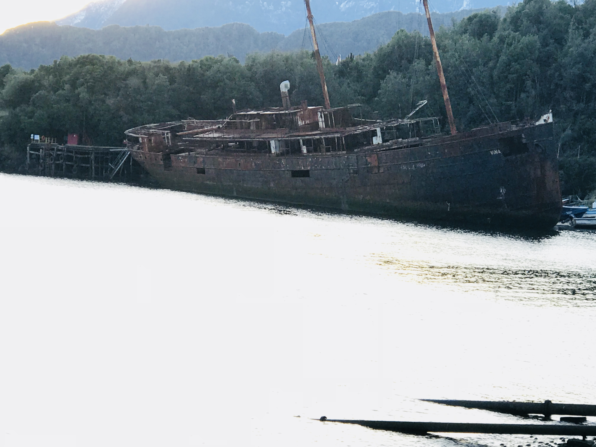
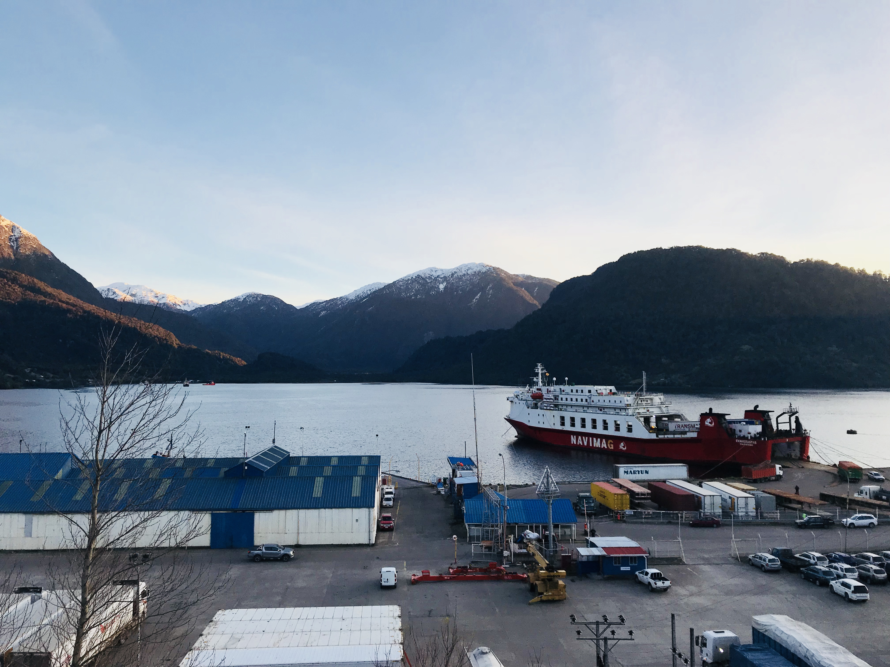
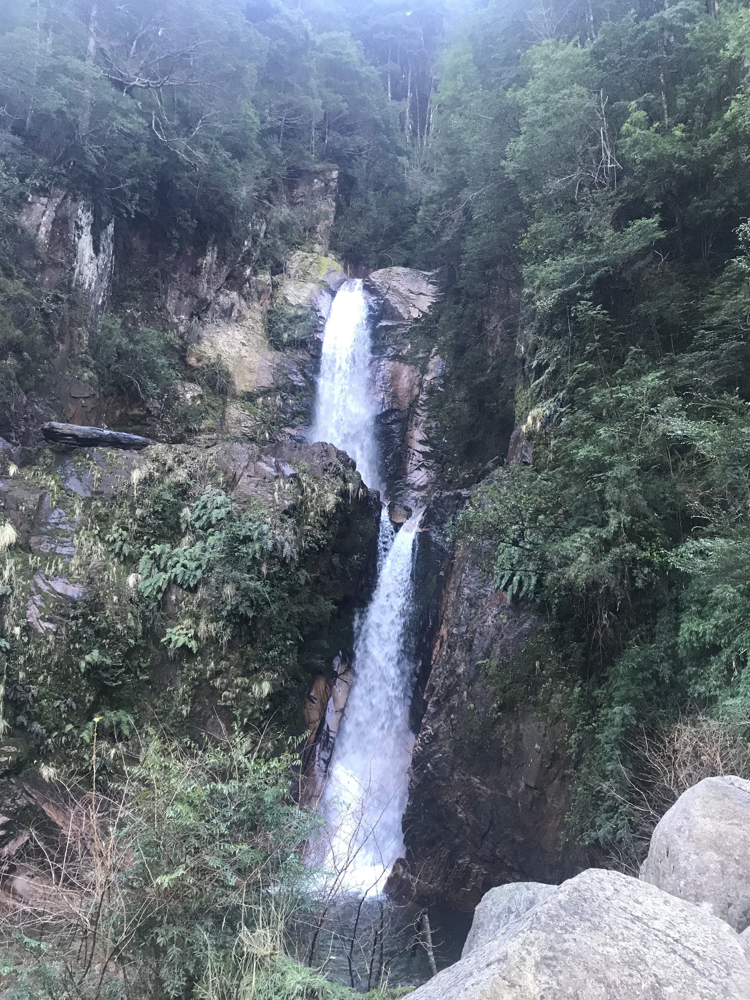
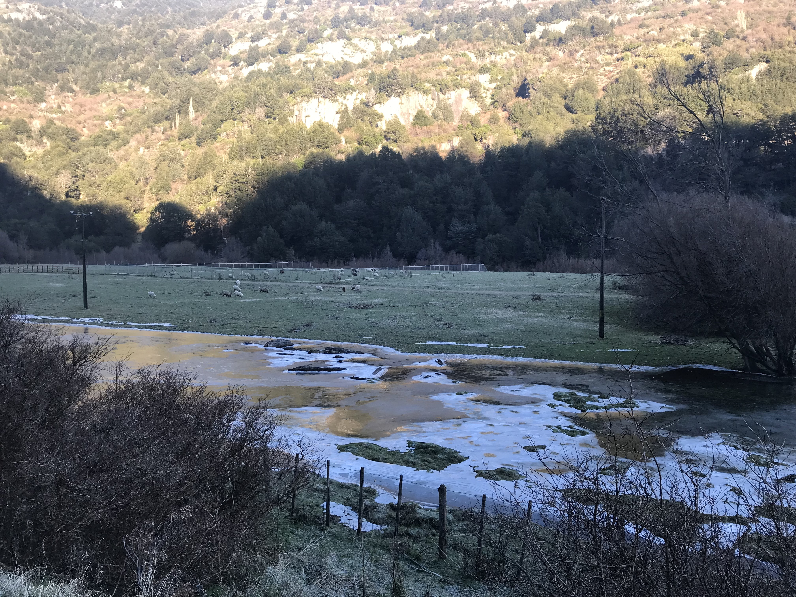
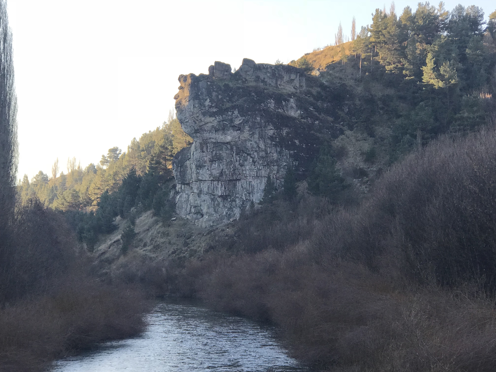

Puerto Chacabuco es el puerto principal de la región de Aysén. Se ubica cerca de 20 minutos de distancia en auto de la ciudad de Puerto Aysén. Es en este puerto donde llega la mayoría de las provisiones de la región, el resto llega por Argentina y por la carretera Austral.
Puerto Chacabuco es un lugar pequeño, pero muy bonito. Es un puerto rodeado de montañas que en invierno se encuentran todas nevadas. Wikipedia lo define así:
"Puerto Chacabuco es un pueblo y puerto chileno ubicado en la Región de Aysén. Es el puerto principal de la región de Aysén y es administrado por la comuna de Puerto Aysén, provincia de Aysén. A una distancia aproximada de 15 km de la ciudad de Puerto Aysén, tiene una población cercana a los 1600 habitantes aproximadamente. La economía se basa principalmente de la actividad portuaria, pesca, cultivos marinos y en la incrementada actividad turística, a través de el ecoturismo y la pesca deportiva.
Es el puerto marítimo más importante de la región de Aysén, dado que a este puerto es posible acceder desde Puerto Montt (Región de Los Lagos), permitiendo el movimiento de vehículos livianos, pesados y el transporte de carga, ya que actualmente no existe una carretera que una directamente la región de Aysén con el resto del país. Por otra parte, Puerto Chacabuco contribuye al desarrollo de la región de Aysén como plataforma de apoyo a las empresas de salmonicultura establecidas con centros acuicolas para el cultivo y la producción de salmónidos. También permite conectividad marítima de cargas por productos de importación; exportación; cabotage y turismo, a través de buques porta contenedores; graneleros y de pasajeros."
Soy Rodrigo Contreras, chileno, oriundo de Concepción y residente en Santiago desde hace ya 5 años. Casado con una hija de 11 años. Mi familia está repartida entre Concepción, Talca, Santiago y Puerto Aysén. Las vacaciones preferidas de mi familia es conocer lugares nuevos, como por ejeplo recorrer el sur de Chile.
Las últimas vacaciones fueron con mi esposa visitando a familiares en la región de Aysén, conociendo lugares como Puerto Aysén, Balmaceda, Coyhaique, Villa Mañihuales, entre otros lugares.